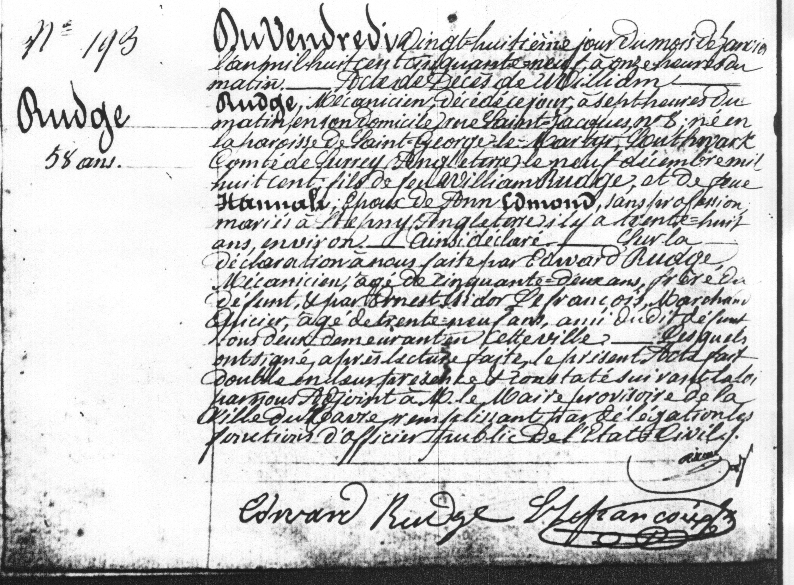

This is an image of William Rudge's record of death, followed by a complete translation.

"No. 193 Rudge 58 years old Friday, the twenty-eighth day of the month of January, one thousand hundred fifty nine, at eleven in the morning, the death of William Rudge, engineer, deceased this day at seven o'clock in the morning at his home on Saint Jacques Street No. 8, born in the parish of Saint George the Martyr, Southwark, county of Surrey, England, the ninth of December, one thousand eight hundred, son of the late William Rudge and the late Hannah, husband of Ann Edmond, no profession, married in Stepney, England for about thirty eight years. Thus declared on a declaration given to us by Edward Rudge, engineer, age fifty-two years old, brother of the deceased, and by Mestsidor le Francois, shopkeeper officer, age of thirty nine years, all friends of the deceased, living in this town. After the reading, they signed the present act together in their presence and certified according to the law by us. Adjunct to the provisional mayor of the town of Le Havre, and completed by the delegated functions of the pubic officer of the state. Edward Rudge Lemaredeal